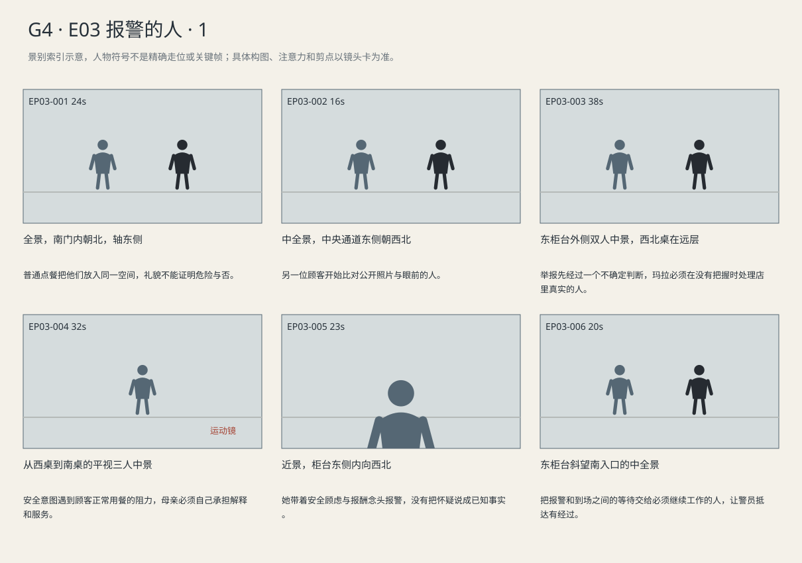
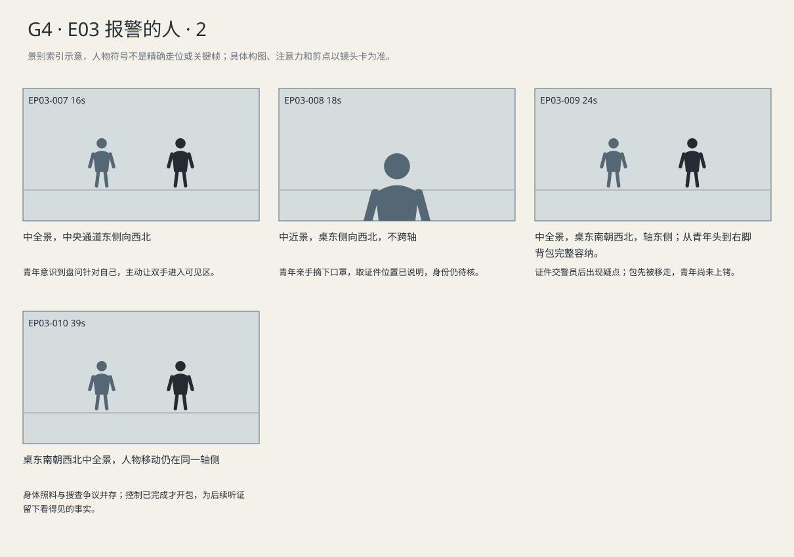

礼貌的服务关系转为报警与身份核查；证件对不上后，人和背包被移开，警方开包发生在青年已受控制之后。
剧本Markdown · 全部独立复制稿 · 英语字幕 · 中文字幕
详细剧本
E03-SC04 · 清早·第五天 · DINER
快餐店南入口对着中央通道，东侧柜台亮暖白灯，西侧临街窗透冷光，北端是后排座椅和厕所通道。玛拉在东柜台里整理零钱。戴浅蓝口罩的路易吉从南门进来，黑包仍在背上。玛拉的灰风衣已挂在东侧工作区，蓝夹收在柜台内个人包中。
路易吉从南门进，在东柜台停下，摊开零钱。
路易吉（英语）：Coffee, please. Whatever's hot. Thank you.
中文对照：请给我咖啡。热的就行，谢谢。
他数最后两枚硬币时，玛拉从手边取杯，接好热咖啡，先递到他左手。
玛拉（英语）：Here you go. You can take that table.
中文对照：给你，坐那张桌吧。
她示意北后排，等他拿稳杯子才收下零钱。杯盖一侧弹起，玛拉指向杯身。
玛拉（英语）：Lid's loose. Hold the cup, not the top.
中文对照：盖子没扣牢。拿杯身，别提盖子。
她从柜台拿新盖给他按紧。他绕开收餐盘的客人往那儿去，口罩一直戴着，没有喝咖啡。
他坐西北桌，杯放前方，包卸在右脚边。疼痛让左掌撑桌、右手贴腰。东柜台玛拉叫住同事。
玛拉（英语）：If the clinic calls, come get me. Doesn't matter how busy we are.
中文对照：诊所打来就叫我。再忙也得叫我。
棕夹克老人从电视看向北桌，拿着收据离开自己的座位。
E04-SC01 · 清早·第五天·紧接E03 · DINER
快餐店南门外渐亮，中央通道通向北后排，东柜台内是玛拉，西窗透冷光。路易吉戴浅蓝口罩坐西北桌，纸杯在前，黑背包靠右脚。一个穿棕夹克的老年男顾客在东柜台边压低声音；带孩子的女顾客坐在中央通道西侧。
老人把收据推过柜台，手指却压着不松。玛拉先指向一笔价格，他没有看。他朝西北桌偏一下头。
老顾客（英语）：Back there. Isn't that the guy on the news? Don't point.
中文对照：后边那个。是不是新闻上那个人？别指。
玛拉等他偏第二次才看过去，青年正扶腰换坐姿。她收回视线，声音压到两人之间。
玛拉（英语）：You know him?
中文对照：你认识他？
老顾客（英语）：No. The picture. On the TV.
中文对照：不认识。电视上那张照片。
玛拉（英语）：Okay. Let me look. Just stay here a minute.
中文对照：好，我看看。先在这儿待一会儿。
老人终于松开收据。玛拉拿起纸巾，绕出柜台，经过电视可见的角度；她没有掏手机拍青年。
玛拉（英语）：Would you mind moving over there? I need to clear this section. I'll get your tray.
中文对照：能挪到那边吗？这片得空出来。托盘我来拿。
母亲看一眼没有污渍的桌面，没立刻起身。孩子要把敞口果汁杯放到满托盘上，杯身歪向桌边。玛拉先把纸巾垫住杯底。
玛拉（英语）：You don't have to finish. I'll bring it all over. Careful with that one.
中文对照：不用急着吃完。我给你们端过去。那个杯子拿稳。
她等孩子两手握稳杯身，才拿起托盘；母亲把椅子推回，一起移到南桌。玛拉把食物按原位放下，没有催他们出店。
回到工作区，她从右裤袋拿手机。电视悬赏条从眼角掠过，她抬眼看清，又看北桌。接通后，她背向同事，把声音压低。
玛拉（英语）：I'm at the restaurant on Oak Street. A customer looks like the man you're looking for. I don't know if he's armed.
中文对照：我在橡树街的餐厅。有个客人像你们要找的人。我不知道他有没有武器。
接线端继续说话，词句不可辨。玛拉点了一次头，把手机贴紧耳边，给柜台前的老人一个等一下的手势。她没有把悬赏金额再看第二遍。
玛拉低头才发现自己还攥着老人的收据，便把纸折齐。
玛拉（英语）：You wanted the receipt, right? Here.
中文对照：你要收据，对吧？给。
老人接过，回自己的座位。玛拉给空杯续水，水快满时才停。她把杯底擦干送过柜台。同事从后面收走空壶。南门响一下，是出门的客人；又过几秒，门响第二次，两名警员进来。
两警员由南门沿通道来。甲停桌南，乙在通道稍后。路易吉先看甲，再看通向南门的空隙，扶腰的手停住。
警员甲（英语）：Morning. Hands on the table, please. Got any ID?
中文对照：早上好。请把手放桌上。带证件了吗？
他把双手放到桌面，杯子被手背碰响。
警员甲（英语）：Take the mask off. Slowly. Then tell me where your ID is.
中文对照：把口罩摘了，慢点。然后告诉我证件在哪儿。
路易吉右手缓慢抬到耳边，勾开一侧耳带，把口罩完整摘下，平放杯子旁，手再回桌面。甲看清他的脸，等他回答证件位置。
路易吉（英语）：Left jacket pocket.
中文对照：夹克左口袋。
路易吉只用下巴示意左侧。甲看一眼左口袋，点一下头准许他取证件。
路易吉左手从左袋取卡交给乙，随即放回桌面。乙比对卡与脸，退到通道拨核查电话。甲和青年隔着一只未喝的咖啡杯等着；青年没有往包边伸手。听筒传回核查结果，乙才回来。
警员乙（英语）：This isn't checking out. Keep your hands there.
中文对照：这证件对不上。手放那儿别动。
乙说完，甲才从青年右脚旁提起背包，放到通道外侧。青年看着包移开，两手始终在桌上。
甲示意路易吉起身。青年先移脚，撑桌慢慢站直；甲在身前合上双腕手铐，抓稳上臂。乙让他们向南移开两步。路易吉第二步没跟上，甲停住，没有放开他。
警员甲（英语）：Take a second. Keep your hands in front.
中文对照：缓一下。手放前面。
青年还在调整脚位，甲仍抓稳他的上臂；乙回身拉开通道外侧的背包，肩膀挡住里面。
路易吉（英语）：Wait, let me get my balance. The bag's over there.
中文对照：等一下，先让我站稳。包在那边呢。
甲看他站稳，重新带他往南。南桌顾客已举手机，词句不可辨；玛拉仍留东柜台，不知道自己也在画面内。乙拉拢包口提起跟上，桌上留下口罩和未喝的咖啡。
景别索引板
简化人物符号仅用于检索景别。完整镜头卡、信息变化及相邻剪点另页阅读。


逐镜复制稿
EP03-001 · 制作号E03-SH011 · 24s · 全景，南门内朝北，轴东侧
普通点餐把他们放入同一空间，礼貌不能证明危险与否。
成片采用 [0,24) 秒；1个生成候选，技术边界不是剪点。候选未生成。
16:9横屏，当代美国真人现实悬疑。环境低至中等饱和，人物肤色保持真实差异与自然纹理；深黑保留衣料和道具分离，白纸与白领高光柔和有层次。冷暖来自本镜已有物理光源，不统一青橙、不磨皮、不以整体欠曝制造悬疑。遵循本镜机位、表演与焦点，不擅自追加缓推、急变焦或摇晃。
场次风格：本场时段：清早·第五天。本场光源启用及强度以明确时段和正文为准，同场反打继承光源方向；不因景别变化任意换色温。 本地光色与材质：西窗清早冷光与东柜台暖白工作灯分区，塑料桌面和旧地砖保留日常杂色；黑包与黑裤靠材质和亮度区分。关键移包、手腕与通道不能被前景装饰挡住。
总生成长度26秒，为中间24秒采用区间保留开头和结尾各1秒自然余量，不增添剧情。
人物：
玛拉，38岁白人女性，栗棕发低马尾、眼下疲态、圆方脸，黑色polo工服、灰围裙、深灰裤、防滑鞋；灰风衣为下班外套。手机和蓝色资料夹为独立道具，位置与持物依当前镜头起态和连续动作。声音中音，快而实在，对孩子放缓。
路易吉，26岁意裔男性，深棕短卷发、浓眉、棕眼、较长椭圆脸、清楚下颌、精瘦体态；深炭灰连帽夹克、黑直筒裤、灰运动鞋。黑布背包为独立道具，按本镜起态与动作确定在脚边、肩上或由警方持有，不能因服装描述自动背回身上。戴浅蓝医用口罩。声音中低、清楚克制。
环境与光源：宾州快餐店；入口南，东侧柜台/玛拉工作区，西侧临街窗，北侧后排座位与厕所通道；路易吉坐西北后排，背包靠右脚，警员从南入口沿中央通道来。清早西窗冷光、柜台暖白灯。所有过肩反打沿南北轴同侧，不交换门与柜台。
景别/机位：全景，南门内朝北，轴东侧
构图：东柜台Mara，西窗，北后排
起始画面：玛拉东柜台工服，风衣挂东工作区蓝夹收个人包；青年南门入，口罩戴包双肩。 玛拉手边咖啡机已有热咖啡，纸杯叠在机旁。
事件与表演：路易吉戴口罩到东柜台数硬币，说英语“Coffee, please. Whatever's hot. Thank you.”。玛拉接热咖啡先递到他左手，说“Here you go. You can take that table.”，等他握稳收零钱。杯盖一侧弹起，她说“Lid's loose. Hold the cup, not the top.”，拿新盖按紧。青年未喝咖啡，戴口罩绕开收盘客人去西北桌。
注意力变化：两人出门理由已清楚。 → 普通点餐把他们放入同一空间，礼貌不能证明危险与否。
摄影机：固定南门内偏东全景，南门—东柜台—西北桌路线同框，轴东侧。
焦点：交杯与交钱可读，口罩不露嘴。
结束状态：热咖啡在青年左手，杯盖扣好；零钱已付，青年戴口罩往西北桌走。
声音：<门铃、咖啡机、厨房炸锅>
(无背景音乐)
准确对白按顺序：
路易吉向玛拉，疲倦却客气，供后来亲眼记忆，只使用英语说一次：{Coffee, please. Whatever's hot. Thank you.}
玛拉向路易吉，忙着开班，普通照顾，只使用英语说一次：{Here you go. You can take that table.}
玛拉向路易吉，职业习惯，注意热饮而非认脸，只使用英语说一次：{Lid's loose. Hold the cup, not the top.}
只说列出的英语原句；导演说明不发声，不说中文译文，不额外加旁白或对白。手机/公文/字幕均由后期叠加，生成画面不排字。单镜连续，不加入内部切镜；前后保持身份、服装、门窗、物件与接触状态一致。静帧起态备稿
16:9横屏，当代美国真人现实悬疑。环境低至中等饱和，人物肤色保持真实差异与自然纹理；深黑保留衣料和道具分离，白纸与白领高光柔和有层次。冷暖来自本镜已有物理光源，不统一青橙、不磨皮、不以整体欠曝制造悬疑。遵循本镜机位、表演与焦点，不擅自追加缓推、急变焦或摇晃。
场次风格：本场时段：清早·第五天。本场光源启用及强度以明确时段和正文为准，同场反打继承光源方向；不因景别变化任意换色温。 本地光色与材质：西窗清早冷光与东柜台暖白工作灯分区，塑料桌面和旧地砖保留日常杂色；黑包与黑裤靠材质和亮度区分。关键移包、手腕与通道不能被前景装饰挡住。
玛拉，38岁白人女性，栗棕发低马尾、眼下疲态、圆方脸，黑色polo工服、灰围裙、深灰裤、防滑鞋；灰风衣为下班外套。手机和蓝色资料夹为独立道具，位置与持物依当前镜头起态和连续动作。声音中音，快而实在，对孩子放缓。
路易吉，26岁意裔男性，深棕短卷发、浓眉、棕眼、较长椭圆脸、清楚下颌、精瘦体态；深炭灰连帽夹克、黑直筒裤、灰运动鞋。黑布背包为独立道具，按本镜起态与动作确定在脚边、肩上或由警方持有，不能因服装描述自动背回身上。戴浅蓝医用口罩。声音中低、清楚克制。
宾州快餐店；入口南，东侧柜台/玛拉工作区，西侧临街窗，北侧后排座位与厕所通道；路易吉坐西北后排，背包靠右脚，警员从南入口沿中央通道来。清早西窗冷光、柜台暖白灯。所有过肩反打沿南北轴同侧，不交换门与柜台。
全景，南门内朝北，轴东侧；起态构图：玛拉东柜台工服，风衣挂东工作区蓝夹收个人包；青年南门入，口罩戴包双肩。 玛拉手边咖啡机已有热咖啡，纸杯叠在机旁。。空间方位按上列环境，人物只处于起态；本镜后续调度不出现在静帧。此图不描画尚未发生的动作，不生成字幕和公文长字。
| 英语原句 | 中文对照 | 预定窗口 |
|---|
| 路易吉：Coffee, please. Whatever's hot. Thank you. | 请给我咖啡。热的就行，谢谢。 | 1.8–5.01s |
| 玛拉：Here you go. You can take that table. | 给你，坐那张桌吧。 | 5.36–9.52s |
| 玛拉：Lid's loose. Hold the cup, not the top. | 盖子没扣牢。拿杯身，别提盖子。 | 12–15.4s |
观众信息：两人出门理由已清楚。 → 普通点餐把他们放入同一空间，礼貌不能证明危险与否。
切点：装好热咖啡的杯交稳青年左手、零钱留柜台后，他朝北后排走；没有待叫号的订单。
接口：同场跟到西北后排
EP03-002 · 制作号E03-SH012 · 16s · 中全景，中央通道东侧朝西北
另一位顾客开始比对公开照片与眼前的人。
成片采用 [24,40) 秒；1个生成候选，技术边界不是剪点。候选未生成。
16:9横屏，当代美国真人现实悬疑。环境低至中等饱和，人物肤色保持真实差异与自然纹理；深黑保留衣料和道具分离，白纸与白领高光柔和有层次。冷暖来自本镜已有物理光源，不统一青橙、不磨皮、不以整体欠曝制造悬疑。遵循本镜机位、表演与焦点，不擅自追加缓推、急变焦或摇晃。
场次风格：本场时段：清早·第五天。本场光源启用及强度以明确时段和正文为准，同场反打继承光源方向；不因景别变化任意换色温。 本地光色与材质：西窗清早冷光与东柜台暖白工作灯分区，塑料桌面和旧地砖保留日常杂色；黑包与黑裤靠材质和亮度区分。关键移包、手腕与通道不能被前景装饰挡住。
总生成长度18秒，为中间16秒采用区间保留开头和结尾各1秒自然余量，不增添剧情。
人物：
路易吉，26岁意裔男性，深棕短卷发、浓眉、棕眼、较长椭圆脸、清楚下颌、精瘦体态；深炭灰连帽夹克、黑直筒裤、灰运动鞋。黑布背包为独立道具，按本镜起态与动作确定在脚边、肩上或由警方持有，不能因服装描述自动背回身上。戴浅蓝医用口罩。声音中低、清楚克制。
玛拉，38岁白人女性，栗棕发低马尾、眼下疲态、圆方脸，黑色polo工服、灰围裙、深灰裤、防滑鞋；灰风衣为下班外套。手机和蓝色资料夹为独立道具，位置与持物依当前镜头起态和连续动作。声音中音，快而实在，对孩子放缓。
本镜画外继承，声源/人物不入画：店内同事，26岁女性，棕发盘起、黑polo、灰围裙，脸与玛拉不同；东柜台工作背景，无新增对白。
老顾客，65岁白人男性，灰发、棕夹克；收据归属依当前镜头起态和递接动作；压低音量、不确定，不对全店喊叫。
声源与背景限定：同事只在东柜台画外接收玛拉所列话语，不自动把东柜台放入朝西北的构图；老顾客在本镜既定后层持收据起身。
环境与光源：宾州快餐店；入口南，东侧柜台/玛拉工作区，西侧临街窗，北侧后排座位与厕所通道；路易吉坐西北后排，背包靠右脚，警员从南入口沿中央通道来。清早西窗冷光、柜台暖白灯。所有过肩反打沿南北轴同侧，不交换门与柜台。
景别/机位：中全景，中央通道东侧朝西北
构图：青年西北桌居中，背包右脚在画下沿；棕夹克老人从北侧相邻桌起身走向画外东柜台。玛拉与同事仅画外声，位置继承东工作区。
起始画面：他左手杯，右手扶背包带
事件与表演：他坐西北桌，杯放前方，包卸在右脚边。疼痛让左掌撑桌、右手贴腰。东柜台玛拉叫住同事。玛拉对同事说本镜第1句英语对白，把救急联系托给同事。棕夹克老人从电视看向北桌，拿着收据离开自己的座位。
注意力变化：青年坐到最远空桌，母亲还在等诊所。 → 另一位顾客开始比对公开照片与眼前的人。
摄影机：固定通道东侧中全景朝西北，青年卸包中景、老人起身后层；不替老人先下结论。
焦点：右脚旁放包完整可见，老人是后层活动。
结束状态：包右脚、杯桌前、口罩戴；老人拿收据向东柜台，玛拉柜台内。
声音：<青年椅脚与放包、低电视声；玛拉从画外东柜台说所列英语，同事不新增答话。>
(无背景音乐)
准确对白按顺序：
玛拉向同事，把救急联系托给同事，只使用英语说一次：{If the clinic calls, come get me. Doesn't matter how busy we are.}
只说列出的英语原句；导演说明不发声，不说中文译文，不额外加旁白或对白。手机/公文/字幕均由后期叠加，生成画面不排字。单镜连续，不加入内部切镜；前后保持身份、服装、门窗、物件与接触状态一致。静帧起态备稿
16:9横屏，当代美国真人现实悬疑。环境低至中等饱和，人物肤色保持真实差异与自然纹理；深黑保留衣料和道具分离，白纸与白领高光柔和有层次。冷暖来自本镜已有物理光源，不统一青橙、不磨皮、不以整体欠曝制造悬疑。遵循本镜机位、表演与焦点，不擅自追加缓推、急变焦或摇晃。
场次风格：本场时段：清早·第五天。本场光源启用及强度以明确时段和正文为准，同场反打继承光源方向；不因景别变化任意换色温。 本地光色与材质：西窗清早冷光与东柜台暖白工作灯分区，塑料桌面和旧地砖保留日常杂色；黑包与黑裤靠材质和亮度区分。关键移包、手腕与通道不能被前景装饰挡住。
路易吉，26岁意裔男性，深棕短卷发、浓眉、棕眼、较长椭圆脸、清楚下颌、精瘦体态；深炭灰连帽夹克、黑直筒裤、灰运动鞋。黑布背包为独立道具，按本镜起态与动作确定在脚边、肩上或由警方持有，不能因服装描述自动背回身上。戴浅蓝医用口罩。声音中低、清楚克制。
玛拉，38岁白人女性，栗棕发低马尾、眼下疲态、圆方脸，黑色polo工服、灰围裙、深灰裤、防滑鞋；灰风衣为下班外套。手机和蓝色资料夹为独立道具，位置与持物依当前镜头起态和连续动作。声音中音，快而实在，对孩子放缓。
老顾客，65岁白人男性，灰发、棕夹克；收据归属依当前镜头起态和递接动作；压低音量、不确定，不对全店喊叫。
宾州快餐店；入口南，东侧柜台/玛拉工作区，西侧临街窗，北侧后排座位与厕所通道；路易吉坐西北后排，背包靠右脚，警员从南入口沿中央通道来。清早西窗冷光、柜台暖白灯。所有过肩反打沿南北轴同侧，不交换门与柜台。
中全景，中央通道东侧朝西北；起态构图：他左手杯，右手扶背包带。空间方位按上列环境，人物只处于起态；本镜后续调度不出现在静帧。此图不描画尚未发生的动作，不生成字幕和公文长字。
| 英语原句 | 中文对照 | 预定窗口 |
|---|
| 玛拉：If the clinic calls, come get me. Doesn't matter how busy we are. | 诊所打来就叫我。再忙也得叫我。 | 0.6–7.14s |
观众信息：青年坐到最远空桌，母亲还在等诊所。 → 另一位顾客开始比对公开照片与眼前的人。
切点：老人持收据走向柜台，E04接收据。
接口：快餐店同一早晨连续接入E04-SC01；保持南门、东柜台、西北座及右脚边背包。环境声连续，不插片尾或重复客人走向柜台。
EP03-003 · 制作号E04-SH001 · 38s · 东柜台外侧双人中景，西北桌在远层
举报先经过一个不确定判断，玛拉必须在没有把握时处理店里真实的人。
成片采用 [40,78) 秒；2个生成候选，技术边界不是剪点。候选未生成。
成片镜 E04-SH001 共38秒；下面2个独立生成候选共同服务本镜。技术接续不等于成片剪点，不能将本文件整段提交为一次任务。先制作并核验连续表演、机位和声线，再决定延长或覆盖方案；当前无实际媒体。
【E04-SH001-G01 · 本镜采用 0—19 秒】
16:9横屏，当代美国真人现实悬疑。环境低至中等饱和，人物肤色保持真实差异与自然纹理；深黑保留衣料和道具分离，白纸与白领高光柔和有层次。冷暖来自本镜已有物理光源，不统一青橙、不磨皮、不以整体欠曝制造悬疑。遵循本镜机位、表演与焦点，不擅自追加缓推、急变焦或摇晃。
场次风格：本场时段：清早·第五天·紧接E03。本场光源启用及强度以明确时段和正文为准，同场反打继承光源方向；不因景别变化任意换色温。 本地光色与材质：西窗清早冷光与东柜台暖白工作灯分区，塑料桌面和旧地砖保留日常杂色；黑包与黑裤靠材质和亮度区分。关键移包、手腕与通道不能被前景装饰挡住。
总生成长度21秒，为中间19秒采用区间保留开头和结尾各1秒自然余量，不增添剧情。
人物：
以下为连续镜的身份库；人物是否已入画、离场及持物只依本段起态与动作，不能把整镜所有角色同时塞入本段。
玛拉，38岁白人女性，栗棕发低马尾、眼下疲态、圆方脸，黑色polo工服、灰围裙、深灰裤、防滑鞋；灰风衣为下班外套。手机和蓝色资料夹为独立道具，位置与持物依当前镜头起态和连续动作。声音中音，快而实在，对孩子放缓。
路易吉，26岁意裔男性，深棕短卷发、浓眉、棕眼、较长椭圆脸、清楚下颌、精瘦体态；深炭灰连帽夹克、黑直筒裤、灰运动鞋。黑布背包为独立道具，按本镜起态与动作确定在脚边、肩上或由警方持有，不能因服装描述自动背回身上。声音中低、清楚克制。本镜明确外观：戴浅蓝医用口罩；本镜不摘口罩。
老顾客，65岁白人男性，灰发、棕夹克；收据归属依当前镜头起态和递接动作；压低音量、不确定，不对全店喊叫。
本镜外观优先覆盖（其余身份/服装不变）：{"LUIGI-STREET": "戴浅蓝医用口罩；本镜不摘口罩"}
环境与光源：宾州快餐店；入口南，东侧柜台/玛拉工作区，西侧临街窗，北侧后排座位与厕所通道；路易吉坐西北后排，背包靠右脚，警员从南入口沿中央通道来。清早西窗冷光、柜台暖白灯。所有过肩反打沿南北轴同侧，不交换门与柜台。
景别/机位：东柜台外侧双人中景
构图：沿用该成片镜既定机位和场景方向；当前站位、朝向与持物：老人手压收据，玛拉以为价格有错。
起始画面：老人手压收据，玛拉以为价格有错。
事件与表演：老人提示照片相像，母亲看后问他是否认识青年。
注意力变化：老人手压收据，玛拉以为价格有错。 → 老人留柜台，玛拉等答。
摄影机：固定双人关系，不跟每次眼神切青年脸；结尾让玛拉离开这一层。
焦点：仅响应本段当前动作与受话关系；不预先转向尚未发生的后段事件。
结束状态：老人留柜台，玛拉等答。
声音：<冷柜和厨房抽风持续低响；当前空间连续环境底声；拟音只随本段真实动作与物件接触发生，已完成事件不重演；可辨英语仅为下列本段对白。>
(无背景音乐)
准确对白按顺序：
老顾客向玛拉，怕被听见，把不确定藏在催促里，只使用英语说一次：{Back there. Isn't that the guy on the news? Don't point.}
玛拉向老顾客，先分辨认识一个人与觉得脸像，只使用英语说一次：{You know him?}
只说列出的英语原句；导演说明不发声，不说中文译文，不额外加旁白或对白。手机/公文/字幕均由后期叠加，生成画面不排字。单镜连续，不加入内部切镜；前后保持身份、服装、门窗、物件与接触状态一致。
【E04-SH001-G02 · 本镜采用 19—38 秒】
16:9横屏，当代美国真人现实悬疑。环境低至中等饱和，人物肤色保持真实差异与自然纹理；深黑保留衣料和道具分离，白纸与白领高光柔和有层次。冷暖来自本镜已有物理光源，不统一青橙、不磨皮、不以整体欠曝制造悬疑。遵循本镜机位、表演与焦点，不擅自追加缓推、急变焦或摇晃。
场次风格：本场时段：清早·第五天·紧接E03。本场光源启用及强度以明确时段和正文为准，同场反打继承光源方向；不因景别变化任意换色温。 本地光色与材质：西窗清早冷光与东柜台暖白工作灯分区，塑料桌面和旧地砖保留日常杂色；黑包与黑裤靠材质和亮度区分。关键移包、手腕与通道不能被前景装饰挡住。
总生成长度21秒，为中间19秒采用区间保留开头和结尾各1秒自然余量，不增添剧情。
人物：
以下为连续镜的身份库；人物是否已入画、离场及持物只依本段起态与动作，不能把整镜所有角色同时塞入本段。
玛拉，38岁白人女性，栗棕发低马尾、眼下疲态、圆方脸，黑色polo工服、灰围裙、深灰裤、防滑鞋；灰风衣为下班外套。手机和蓝色资料夹为独立道具，位置与持物依当前镜头起态和连续动作。声音中音，快而实在，对孩子放缓。
路易吉，26岁意裔男性，深棕短卷发、浓眉、棕眼、较长椭圆脸、清楚下颌、精瘦体态；深炭灰连帽夹克、黑直筒裤、灰运动鞋。黑布背包为独立道具，按本镜起态与动作确定在脚边、肩上或由警方持有，不能因服装描述自动背回身上。声音中低、清楚克制。本镜明确外观：戴浅蓝医用口罩；本镜不摘口罩。
老顾客，65岁白人男性，灰发、棕夹克；收据归属依当前镜头起态和递接动作；压低音量、不确定，不对全店喊叫。
本镜外观优先覆盖（其余身份/服装不变）：{"LUIGI-STREET": "戴浅蓝医用口罩；本镜不摘口罩"}
环境与光源：宾州快餐店；入口南，东侧柜台/玛拉工作区，西侧临街窗，北侧后排座位与厕所通道；路易吉坐西北后排，背包靠右脚，警员从南入口沿中央通道来。清早西窗冷光、柜台暖白灯。所有过肩反打沿南北轴同侧，不交换门与柜台。
景别/机位：东柜台外侧双人中景
构图：沿用该成片镜既定机位和场景方向；当前站位、朝向与持物：青年还在远层扶腰坐着。
起始画面：青年还在远层扶腰坐着。
事件与表演：老人承认只看照片，玛拉让他留在原位，取纸巾离开柜台。
注意力变化：青年还在远层扶腰坐着。 → 玛拉向母子桌去，老人松开收据。
摄影机：固定双人关系，不跟每次眼神切青年脸；结尾让玛拉离开这一层。
焦点：仅响应本段当前动作与受话关系；不预先转向尚未发生的后段事件。
结束状态：玛拉向母子桌去，老人松开收据。
声音：<冷柜和厨房抽风持续低响；当前空间连续环境底声；拟音只随本段真实动作与物件接触发生，已完成事件不重演；可辨英语仅为下列本段对白。>
(无背景音乐)
准确对白按顺序：
老顾客向玛拉，自己的把握没有刚才那么足，只使用英语说一次：{No. The picture. On the TV.}
玛拉向老顾客，不向别人广播自己的判断，只使用英语说一次：{Okay. Let me look. Just stay here a minute.}
只说列出的英语原句；导演说明不发声，不说中文译文，不额外加旁白或对白。手机/公文/字幕均由后期叠加，生成画面不排字。单镜连续，不加入内部切镜；前后保持身份、服装、门窗、物件与接触状态一致。静帧起态备稿
16:9横屏，当代美国真人现实悬疑。环境低至中等饱和，人物肤色保持真实差异与自然纹理；深黑保留衣料和道具分离，白纸与白领高光柔和有层次。冷暖来自本镜已有物理光源，不统一青橙、不磨皮、不以整体欠曝制造悬疑。遵循本镜机位、表演与焦点，不擅自追加缓推、急变焦或摇晃。
场次风格：本场时段：清早·第五天·紧接E03。本场光源启用及强度以明确时段和正文为准，同场反打继承光源方向；不因景别变化任意换色温。 本地光色与材质：西窗清早冷光与东柜台暖白工作灯分区，塑料桌面和旧地砖保留日常杂色；黑包与黑裤靠材质和亮度区分。关键移包、手腕与通道不能被前景装饰挡住。
玛拉，38岁白人女性，栗棕发低马尾、眼下疲态、圆方脸，黑色polo工服、灰围裙、深灰裤、防滑鞋；灰风衣为下班外套。手机和蓝色资料夹为独立道具，位置与持物依当前镜头起态和连续动作。声音中音，快而实在，对孩子放缓。
路易吉，26岁意裔男性，深棕短卷发、浓眉、棕眼、较长椭圆脸、清楚下颌、精瘦体态；深炭灰连帽夹克、黑直筒裤、灰运动鞋。黑布背包为独立道具，按本镜起态与动作确定在脚边、肩上或由警方持有，不能因服装描述自动背回身上。声音中低、清楚克制。本镜明确外观：戴浅蓝医用口罩；本镜不摘口罩。
老顾客，65岁白人男性，灰发、棕夹克；收据归属依当前镜头起态和递接动作；压低音量、不确定，不对全店喊叫。
宾州快餐店；入口南，东侧柜台/玛拉工作区，西侧临街窗，北侧后排座位与厕所通道；路易吉坐西北后排，背包靠右脚，警员从南入口沿中央通道来。清早西窗冷光、柜台暖白灯。所有过肩反打沿南北轴同侧，不交换门与柜台。
东柜台外侧双人中景，西北桌在远层；起态构图：老人压住收据，玛拉在东柜台内；青年戴口罩坐西北桌。。空间方位按上列环境，人物只处于起态；本镜后续调度不出现在静帧。此图不描画尚未发生的动作，不生成字幕和公文长字。
本镜外观优先覆盖：{"LUIGI-STREET": "戴浅蓝医用口罩；本镜不摘口罩"}| 英语原句 | 中文对照 | 预定窗口 |
|---|
| 老顾客：Back there. Isn't that the guy on the news? Don't point. | 后边那个。是不是新闻上那个人？别指。 | 3–7.68s |
| 玛拉：You know him? | 你认识他？ | 12–13.28s |
| 老顾客：No. The picture. On the TV. | 不认识。电视上那张照片。 | 20–22.55s |
| 玛拉：Okay. Let me look. Just stay here a minute. | 好，我看看。先在这儿待一会儿。 | 26–29.83s |
观众信息：老人压住收据，玛拉在东柜台内；青年戴口罩坐西北桌。 → 老人留东柜台，玛拉拿纸巾走向通道西侧母子桌；青年仍戴口罩。
切点：老人留东柜台，玛拉拿纸巾走向通道西侧母子桌；青年仍戴口罩。
接口：因本镜末的动作或关系变化进入下一镜；技术接续不作为成片切点。
EP03-004 · 制作号E04-SH002 · 32s · 从西桌到南桌的平视三人中景
安全意图遇到顾客正常用餐的阻力，母亲必须自己承担解释和服务。
成片采用 [78,110) 秒；2个生成候选，技术边界不是剪点。候选未生成。
成片镜 E04-SH002 共32秒；下面2个独立生成候选共同服务本镜。技术接续不等于成片剪点，不能将本文件整段提交为一次任务。先制作并核验连续表演、机位和声线，再决定延长或覆盖方案；当前无实际媒体。
【E04-SH002-G01 · 本镜采用 0—16 秒】
16:9横屏，当代美国真人现实悬疑。环境低至中等饱和，人物肤色保持真实差异与自然纹理；深黑保留衣料和道具分离，白纸与白领高光柔和有层次。冷暖来自本镜已有物理光源，不统一青橙、不磨皮、不以整体欠曝制造悬疑。遵循本镜机位、表演与焦点，不擅自追加缓推、急变焦或摇晃。
场次风格：本场时段：清早·第五天·紧接E03。本场光源启用及强度以明确时段和正文为准，同场反打继承光源方向；不因景别变化任意换色温。 本地光色与材质：西窗清早冷光与东柜台暖白工作灯分区，塑料桌面和旧地砖保留日常杂色；黑包与黑裤靠材质和亮度区分。关键移包、手腕与通道不能被前景装饰挡住。
总生成长度18秒，为中间16秒采用区间保留开头和结尾各1秒自然余量，不增添剧情。
人物：
以下为连续镜的身份库；人物是否已入画、离场及持物只依本段起态与动作，不能把整镜所有角色同时塞入本段。
玛拉，38岁白人女性，栗棕发低马尾、眼下疲态、圆方脸，黑色polo工服、灰围裙、深灰裤、防滑鞋；灰风衣为下班外套。手机和蓝色资料夹为独立道具，位置与持物依当前镜头起态和连续动作。声音中音，快而实在，对孩子放缓。
带孩子的顾客两人：30岁白人女性、深绿外套；6岁男孩、棕夹克。在南侧桌周围按本镜引导行动，无新增台词。
环境与光源：宾州快餐店；入口南，东侧柜台/玛拉工作区，西侧临街窗，北侧后排座位与厕所通道；路易吉坐西北后排，背包靠右脚，警员从南入口沿中央通道来。清早西窗冷光、柜台暖白灯。所有过肩反打沿南北轴同侧，不交换门与柜台。
景别/机位：西桌边玛拉与母子三人中景，托盘和杯在下层，南桌只留已建立的去向。
构图：沿用该成片镜既定机位和场景方向；当前站位、朝向与持物：母子仍坐原桌，玛拉到桌边。
起始画面：母子仍坐原桌，玛拉到桌边。
事件与表演：玛拉提出移桌，母亲迟疑，孩子试图把果汁放到满托盘。
注意力变化：母子仍坐原桌，玛拉到桌边。 → 纸巾在杯底，托盘尚未提起。
摄影机：原桌同侧平视机位固定；本段只完成提议、迟疑和稳杯，不提前向南桌横移。
焦点：稳住三人的礼貌交涉及杯尚未落稳的动作，不转杯子特写。
结束状态：纸巾在杯底，托盘尚未提起。
声音：<冷柜和厨房抽风持续低响；当前空间连续环境底声；拟音只随本段真实动作与物件接触发生，已完成事件不重演；可辨英语仅为下列本段对白。>
(无背景音乐)
准确对白按顺序：
玛拉向带孩子的顾客，把安全转移藏在工作安排里，只使用英语说一次：{Would you mind moving over there? I need to clear this section. I'll get your tray.}
只说列出的英语原句；导演说明不发声，不说中文译文，不额外加旁白或对白。手机/公文/字幕均由后期叠加，生成画面不排字。单镜连续，不加入内部切镜；前后保持身份、服装、门窗、物件与接触状态一致。
【E04-SH002-G02 · 本镜采用 16—32 秒】
16:9横屏，当代美国真人现实悬疑。环境低至中等饱和，人物肤色保持真实差异与自然纹理；深黑保留衣料和道具分离，白纸与白领高光柔和有层次。冷暖来自本镜已有物理光源，不统一青橙、不磨皮、不以整体欠曝制造悬疑。遵循本镜机位、表演与焦点，不擅自追加缓推、急变焦或摇晃。
场次风格：本场时段：清早·第五天·紧接E03。本场光源启用及强度以明确时段和正文为准，同场反打继承光源方向；不因景别变化任意换色温。 本地光色与材质：西窗清早冷光与东柜台暖白工作灯分区，塑料桌面和旧地砖保留日常杂色；黑包与黑裤靠材质和亮度区分。关键移包、手腕与通道不能被前景装饰挡住。
总生成长度18秒，为中间16秒采用区间保留开头和结尾各1秒自然余量，不增添剧情。
人物：
以下为连续镜的身份库；人物是否已入画、离场及持物只依本段起态与动作，不能把整镜所有角色同时塞入本段。
玛拉，38岁白人女性，栗棕发低马尾、眼下疲态、圆方脸，黑色polo工服、灰围裙、深灰裤、防滑鞋；灰风衣为下班外套。手机和蓝色资料夹为独立道具，位置与持物依当前镜头起态和连续动作。声音中音，快而实在，对孩子放缓。
带孩子的顾客两人：30岁白人女性、深绿外套；6岁男孩、棕夹克。在南侧桌周围按本镜引导行动，无新增台词。
环境与光源：宾州快餐店；入口南，东侧柜台/玛拉工作区，西侧临街窗，北侧后排座位与厕所通道；路易吉坐西北后排，背包靠右脚，警员从南入口沿中央通道来。清早西窗冷光、柜台暖白灯。所有过肩反打沿南北轴同侧，不交换门与柜台。
景别/机位：三人平视中景沿原轴侧连续从西桌转到南桌关系，原西桌留后方，人物不瞬移。
构图：沿用该成片镜既定机位和场景方向；当前站位、朝向与持物：孩子两手正在握杯。
起始画面：孩子两手正在握杯。
事件与表演：玛拉说明食物仍可吃完，等杯子稳住再端盘，引母子到南桌并放好。
注意力变化：孩子两手正在握杯。 → 通道西桌空出，母子留南桌，玛拉回工作区。
摄影机：从前段固定终点起，待玛拉真正提稳托盘才同侧短横移，跟完从西桌到南桌的一次移桌；托盘落南桌后停止并保留母子。
焦点：跟随托盘和三人同行的整体动作，食物仍属原母子；到南桌后维持可读景深，不再重新起拍一次搬运。
结束状态：通道西桌空出，母子留南桌，玛拉回工作区。
声音：<冷柜和厨房抽风持续低响；当前空间连续环境底声；拟音只随本段真实动作与物件接触发生，已完成事件不重演；可辨英语仅为下列本段对白。>
(无背景音乐)
准确对白按顺序：
玛拉向带孩子的女顾客及孩子，努力保持平常服务口气，眼睛先看杯子，只使用英语说一次：{You don't have to finish. I'll bring it all over. Careful with that one.}
只说列出的英语原句；导演说明不发声，不说中文译文，不额外加旁白或对白。手机/公文/字幕均由后期叠加，生成画面不排字。单镜连续，不加入内部切镜；前后保持身份、服装、门窗、物件与接触状态一致。静帧起态备稿
16:9横屏，当代美国真人现实悬疑。环境低至中等饱和，人物肤色保持真实差异与自然纹理；深黑保留衣料和道具分离，白纸与白领高光柔和有层次。冷暖来自本镜已有物理光源，不统一青橙、不磨皮、不以整体欠曝制造悬疑。遵循本镜机位、表演与焦点，不擅自追加缓推、急变焦或摇晃。
场次风格：本场时段：清早·第五天·紧接E03。本场光源启用及强度以明确时段和正文为准，同场反打继承光源方向；不因景别变化任意换色温。 本地光色与材质：西窗清早冷光与东柜台暖白工作灯分区，塑料桌面和旧地砖保留日常杂色；黑包与黑裤靠材质和亮度区分。关键移包、手腕与通道不能被前景装饰挡住。
玛拉，38岁白人女性，栗棕发低马尾、眼下疲态、圆方脸，黑色polo工服、灰围裙、深灰裤、防滑鞋；灰风衣为下班外套。手机和蓝色资料夹为独立道具，位置与持物依当前镜头起态和连续动作。声音中音，快而实在，对孩子放缓。
带孩子的顾客两人：30岁白人女性、深绿外套；6岁男孩、棕夹克。在南侧桌周围按本镜引导行动，无新增台词。
宾州快餐店；入口南，东侧柜台/玛拉工作区，西侧临街窗，北侧后排座位与厕所通道；路易吉坐西北后排，背包靠右脚，警员从南入口沿中央通道来。清早西窗冷光、柜台暖白灯。所有过肩反打沿南北轴同侧，不交换门与柜台。
从西桌到南桌的平视三人中景；起态构图：母子在通道西侧吃东西；玛拉持纸巾走近，南桌有空位。。空间方位按上列环境，人物只处于起态；本镜后续调度不出现在静帧。此图不描画尚未发生的动作，不生成字幕和公文长字。
| 英语原句 | 中文对照 | 预定窗口 |
|---|
| 玛拉：Would you mind moving over there? I need to clear this section. I'll get your tray. | 能挪到那边吗？这片得空出来。托盘我来拿。 | 1–7.81s |
| 玛拉：You don't have to finish. I'll bring it all over. Careful with that one. | 不用急着吃完。我给你们端过去。那个杯子拿稳。 | 18–23.96s |
观众信息：母子在通道西侧吃东西；玛拉持纸巾走近，南桌有空位。 → 母子已到南桌，托盘放稳；玛拉回东工作区，西侧通道空出。
切点：母子已到南桌，托盘放稳；玛拉回东工作区，西侧通道空出。
接口：因本镜末的动作或关系变化进入下一镜；技术接续不作为成片切点。
EP03-005 · 制作号E04-SH003 · 23s · 近景，柜台东侧内向西北
她带着安全顾虑与报酬念头报警，没有把怀疑说成已知事实。
成片采用 [110,133) 秒；1个生成候选，技术边界不是剪点。候选未生成。
16:9横屏，当代美国真人现实悬疑。环境低至中等饱和，人物肤色保持真实差异与自然纹理；深黑保留衣料和道具分离，白纸与白领高光柔和有层次。冷暖来自本镜已有物理光源，不统一青橙、不磨皮、不以整体欠曝制造悬疑。遵循本镜机位、表演与焦点，不擅自追加缓推、急变焦或摇晃。
场次风格：本场时段：清早·第五天·紧接E03。本场光源启用及强度以明确时段和正文为准，同场反打继承光源方向；不因景别变化任意换色温。 本地光色与材质：西窗清早冷光与东柜台暖白工作灯分区，塑料桌面和旧地砖保留日常杂色；黑包与黑裤靠材质和亮度区分。关键移包、手腕与通道不能被前景装饰挡住。
总生成长度25秒，为中间23秒采用区间保留开头和结尾各1秒自然余量，不增添剧情。
人物：
玛拉，38岁白人女性，栗棕发低马尾、眼下疲态、圆方脸，黑色polo工服、灰围裙、深灰裤、防滑鞋；灰风衣为下班外套。手机和蓝色资料夹为独立道具，位置与持物依当前镜头起态和连续动作。声音中音，快而实在，对孩子放缓。
店内同事，26岁女性，棕发盘起、黑polo、灰围裙，脸与玛拉不同；东柜台工作背景，无新增对白。
老顾客，65岁白人男性，灰发、棕夹克；收据归属依当前镜头起态和递接动作；压低音量、不确定，不对全店喊叫。
环境与光源：宾州快餐店；入口南，东侧柜台/玛拉工作区，西侧临街窗，北侧后排座位与厕所通道；路易吉坐西北后排，背包靠右脚，警员从南入口沿中央通道来。清早西窗冷光、柜台暖白灯。所有过肩反打沿南北轴同侧，不交换门与柜台。
景别/机位：近景，柜台东侧内向西北
构图：玛拉在东工作区近层，电话右耳，柜台客人的手在画左缘；西北座位远层仅方向可辨，南门画外。
起始画面：玛拉回东柜台，手机仍右裤袋；母子已在南桌。
事件与表演：玛拉从右裤袋取手机，看见电视悬赏条，核对北桌后拨通；按所列英语报告地址、外貌判断与不知是否有武器。听完接线端不可辨回复，向老人示意稍等。
注意力变化：她先挪开母子，也看到悬赏。 → 她带着安全顾虑与报酬念头报警，没有把怀疑说成已知事实。
摄影机：固定柜台内近景，手机右耳、向顾客示意的左手同框；悬赏由眼线和既有电视位置交代。
焦点：保持玛拉，不用夸张拉焦把悬赏变成唯一动机。
结束状态：报警电话结束，手机收回右裤袋；玛拉必须继续接待眼前客人。
声音：<电话连接声、厨房通风、柜台远交谈>
(无背景音乐)
准确对白按顺序：
玛拉向报警接线员，压低声报自己观察到的程度，只使用英语说一次：{I'm at the restaurant on Oak Street. A customer looks like the man you're looking for. I don't know if he's armed.}
只说列出的英语原句；导演说明不发声，不说中文译文，不额外加旁白或对白。手机/公文/字幕均由后期叠加，生成画面不排字。单镜连续，不加入内部切镜；前后保持身份、服装、门窗、物件与接触状态一致。静帧起态备稿
16:9横屏，当代美国真人现实悬疑。环境低至中等饱和，人物肤色保持真实差异与自然纹理；深黑保留衣料和道具分离，白纸与白领高光柔和有层次。冷暖来自本镜已有物理光源，不统一青橙、不磨皮、不以整体欠曝制造悬疑。遵循本镜机位、表演与焦点，不擅自追加缓推、急变焦或摇晃。
场次风格：本场时段：清早·第五天·紧接E03。本场光源启用及强度以明确时段和正文为准，同场反打继承光源方向；不因景别变化任意换色温。 本地光色与材质：西窗清早冷光与东柜台暖白工作灯分区，塑料桌面和旧地砖保留日常杂色；黑包与黑裤靠材质和亮度区分。关键移包、手腕与通道不能被前景装饰挡住。
玛拉，38岁白人女性，栗棕发低马尾、眼下疲态、圆方脸，黑色polo工服、灰围裙、深灰裤、防滑鞋；灰风衣为下班外套。手机和蓝色资料夹为独立道具，位置与持物依当前镜头起态和连续动作。声音中音，快而实在，对孩子放缓。
店内同事，26岁女性，棕发盘起、黑polo、灰围裙，脸与玛拉不同；东柜台工作背景，无新增对白。
老顾客，65岁白人男性，灰发、棕夹克；收据归属依当前镜头起态和递接动作；压低音量、不确定，不对全店喊叫。
宾州快餐店；入口南，东侧柜台/玛拉工作区，西侧临街窗，北侧后排座位与厕所通道；路易吉坐西北后排，背包靠右脚，警员从南入口沿中央通道来。清早西窗冷光、柜台暖白灯。所有过肩反打沿南北轴同侧，不交换门与柜台。
近景，柜台东侧内向西北；起态构图：玛拉回东柜台，手机仍右裤袋；母子已在南桌。。空间方位按上列环境，人物只处于起态；本镜后续调度不出现在静帧。此图不描画尚未发生的动作，不生成字幕和公文长字。
| 英语原句 | 中文对照 | 预定窗口 |
|---|
| 玛拉：I'm at the restaurant on Oak Street. A customer looks like the man you're looking for. I don't know if he's armed. | 我在橡树街的餐厅。有个客人像你们要找的人。我不知道他有没有武器。 | 4–13.36s |
观众信息：她先挪开母子，也看到悬赏。 → 她带着安全顾虑与报酬念头报警，没有把怀疑说成已知事实。
切点：她听接线员，南门铃声在下一镜响起。
接口：略去等待，接警员南门进入
EP03-006 · 制作号E04-SH101 · 20s · 东柜台斜望南入口的中全景
把报警和到场之间的等待交给必须继续工作的人，让警员抵达有经过。
成片采用 [133,153) 秒；1个生成候选，技术边界不是剪点。候选未生成。
16:9横屏，当代美国真人现实悬疑。环境低至中等饱和，人物肤色保持真实差异与自然纹理；深黑保留衣料和道具分离，白纸与白领高光柔和有层次。冷暖来自本镜已有物理光源，不统一青橙、不磨皮、不以整体欠曝制造悬疑。遵循本镜机位、表演与焦点，不擅自追加缓推、急变焦或摇晃。
场次风格：本场时段：清早·第五天·紧接E03。本场光源启用及强度以明确时段和正文为准，同场反打继承光源方向；不因景别变化任意换色温。 本地光色与材质：西窗清早冷光与东柜台暖白工作灯分区，塑料桌面和旧地砖保留日常杂色；黑包与黑裤靠材质和亮度区分。关键移包、手腕与通道不能被前景装饰挡住。
总生成长度22秒，为中间20秒采用区间保留开头和结尾各1秒自然余量，不增添剧情。
人物：
玛拉，38岁白人女性，栗棕发低马尾、眼下疲态、圆方脸，黑色polo工服、灰围裙、深灰裤、防滑鞋；灰风衣为下班外套。手机和蓝色资料夹为独立道具，位置与持物依当前镜头起态和连续动作。声音中音，快而实在，对孩子放缓。
两名成年警员，深蓝制服、防护背心；一名主问，一名核对身份。不让配角无因齐转头。
店内同事，26岁女性，棕发盘起、黑polo、灰围裙，脸与玛拉不同；东柜台工作背景，无新增对白。
老顾客，65岁白人男性，灰发、棕夹克；收据归属依当前镜头起态和递接动作；压低音量、不确定，不对全店喊叫。
本镜外观优先覆盖（其余身份/服装不变）：{"LUIGI-STREET": "戴浅蓝医用口罩；本镜不摘口罩"}
环境与光源：宾州快餐店；入口南，东侧柜台/玛拉工作区，西侧临街窗，北侧后排座位与厕所通道；路易吉坐西北后排，背包靠右脚，警员从南入口沿中央通道来。清早西窗冷光、柜台暖白灯。所有过肩反打沿南北轴同侧，不交换门与柜台。
景别/机位：东柜台斜望南入口的中全景
构图：玛拉前景水杯与收据；南门后层；西北桌在画外，不跨越其已建立方位。
起始画面：电话已挂，玛拉在柜台攥着老人的收据；老人空手等在柜台外，青年戴口罩在西北桌。
事件与表演：玛拉低头才发现自己还攥着老人的收据，便把纸折齐。玛拉对老顾客说英语“You wanted the receipt, right? Here.”；用最普通的工作把自己稳住。老人接过，回自己的座位。玛拉给空杯续水，水快满时才停。她把杯底擦干送过柜台。同事从后面收走空壶。南门响一下，是出门的客人；又过几秒，门响第二次，两名警员进来。
注意力变化：电话已挂，玛拉在柜台攥着老人的收据；老人空手等在柜台外，青年戴口罩在西北桌。 → 两警员已入南门，玛拉留柜台；青年右脚边背包未动，口罩未摘。
摄影机：固定柜台视角，让一次误判门声与真正到场连续发生；不倒计时、不切枪包。
焦点：人物关系与正在争夺的物件维持可读景深，不为每句对白切焦。
结束状态：两警员已入南门，玛拉留柜台；青年右脚边背包未动，口罩未摘。
声音：<同场环境声与所列英语；不补额外可辨台词>
(无背景音乐)
准确对白按顺序：
玛拉向老顾客，用最普通的工作把自己稳住，只使用英语说一次：{You wanted the receipt, right? Here.}
只说列出的英语原句；导演说明不发声，不说中文译文，不额外加旁白或对白。手机/公文/字幕均由后期叠加，生成画面不排字。单镜连续，不加入内部切镜；前后保持身份、服装、门窗、物件与接触状态一致。静帧起态备稿
16:9横屏，当代美国真人现实悬疑。环境低至中等饱和，人物肤色保持真实差异与自然纹理；深黑保留衣料和道具分离，白纸与白领高光柔和有层次。冷暖来自本镜已有物理光源，不统一青橙、不磨皮、不以整体欠曝制造悬疑。遵循本镜机位、表演与焦点，不擅自追加缓推、急变焦或摇晃。
场次风格：本场时段：清早·第五天·紧接E03。本场光源启用及强度以明确时段和正文为准，同场反打继承光源方向；不因景别变化任意换色温。 本地光色与材质：西窗清早冷光与东柜台暖白工作灯分区，塑料桌面和旧地砖保留日常杂色；黑包与黑裤靠材质和亮度区分。关键移包、手腕与通道不能被前景装饰挡住。
玛拉，38岁白人女性，栗棕发低马尾、眼下疲态、圆方脸，黑色polo工服、灰围裙、深灰裤、防滑鞋；灰风衣为下班外套。手机和蓝色资料夹为独立道具，位置与持物依当前镜头起态和连续动作。声音中音，快而实在，对孩子放缓。
两名成年警员，深蓝制服、防护背心；一名主问，一名核对身份。不让配角无因齐转头。
店内同事，26岁女性，棕发盘起、黑polo、灰围裙，脸与玛拉不同；东柜台工作背景，无新增对白。
老顾客，65岁白人男性，灰发、棕夹克；收据归属依当前镜头起态和递接动作；压低音量、不确定，不对全店喊叫。
宾州快餐店；入口南，东侧柜台/玛拉工作区，西侧临街窗，北侧后排座位与厕所通道；路易吉坐西北后排，背包靠右脚，警员从南入口沿中央通道来。清早西窗冷光、柜台暖白灯。所有过肩反打沿南北轴同侧，不交换门与柜台。
东柜台斜望南入口的中全景；起态构图：电话已挂，玛拉在柜台攥着老人的收据；老人空手等在柜台外，青年戴口罩在西北桌。。空间方位按上列环境，人物只处于起态；本镜后续调度不出现在静帧。此图不描画尚未发生的动作，不生成字幕和公文长字。
本镜外观优先覆盖：{"LUIGI-STREET": "戴浅蓝医用口罩；本镜不摘口罩"}| 英语原句 | 中文对照 | 预定窗口 |
|---|
| 玛拉：You wanted the receipt, right? Here. | 你要收据，对吧？给。 | 3–5.55s |
观众信息：电话已挂，玛拉在柜台攥着老人的收据；老人空手等在柜台外，青年戴口罩在西北桌。 → 两警员已入南门，玛拉留柜台；青年右脚边背包未动，口罩未摘。
切点：两警员已入南门，玛拉留柜台；青年右脚边背包未动，口罩未摘。
接口：因本镜末的动作或关系变化进入下一镜；技术接续不作为成片切点。
EP03-007 · 制作号E04-SH004 · 16s · 中全景，中央通道东侧向西北
青年意识到盘问针对自己，主动让双手进入可见区。
成片采用 [153,169) 秒；1个生成候选，技术边界不是剪点。候选未生成。
16:9横屏，当代美国真人现实悬疑。环境低至中等饱和，人物肤色保持真实差异与自然纹理；深黑保留衣料和道具分离，白纸与白领高光柔和有层次。冷暖来自本镜已有物理光源，不统一青橙、不磨皮、不以整体欠曝制造悬疑。遵循本镜机位、表演与焦点，不擅自追加缓推、急变焦或摇晃。
场次风格：本场时段：清早·第五天·紧接E03。本场光源启用及强度以明确时段和正文为准，同场反打继承光源方向；不因景别变化任意换色温。 本地光色与材质：西窗清早冷光与东柜台暖白工作灯分区，塑料桌面和旧地砖保留日常杂色；黑包与黑裤靠材质和亮度区分。关键移包、手腕与通道不能被前景装饰挡住。
总生成长度18秒，为中间16秒采用区间保留开头和结尾各1秒自然余量，不增添剧情。
人物：
路易吉，26岁意裔男性，深棕短卷发、浓眉、棕眼、较长椭圆脸、清楚下颌、精瘦体态；深炭灰连帽夹克、黑直筒裤、灰运动鞋。黑布背包为独立道具，按本镜起态与动作确定在脚边、肩上或由警方持有，不能因服装描述自动背回身上。戴浅蓝医用口罩。声音中低、清楚克制。
两名成年警员，深蓝制服、防护背心；一名主问，一名核对身份。不让配角无因齐转头。
环境与光源：宾州快餐店；入口南，东侧柜台/玛拉工作区，西侧临街窗，北侧后排座位与厕所通道；路易吉坐西北后排，背包靠右脚，警员从南入口沿中央通道来。清早西窗冷光、柜台暖白灯。所有过肩反打沿南北轴同侧，不交换门与柜台。
景别/机位：中全景，中央通道东侧向西北
构图：青年西北桌，警员由南沿中道来
起始画面：Luigi右脚边背包，杯桌前，口罩戴着
事件与表演：两警员由南门沿通道来。甲停在桌南侧，乙在通道略后。路易吉先看甲，再看唯一通向南门的空隙，扶腰的手停住。警员甲对路易吉说本镜第1句英语对白，观察两只手，短句给明确指令。他把双手放到桌面，杯子被手背碰出一声。
注意力变化：报警已经打出，青年还在原位。 → 青年意识到盘问针对自己，主动让双手进入可见区。
摄影机：固定通道东侧中全景，甲桌南乙稍后、青年坐北、包右脚四点关系完整。
焦点：保持双手与脚边包所在关系，不用浅景深遮住背包。
结束状态：青年双手桌面，口罩仍戴，背包右脚，杯在手前。
声音：<警员脚步止住、后方杯碟声变轻>
(无背景音乐)
准确对白按顺序：
警员甲向路易吉，观察两只手，短句给明确指令，只使用英语说一次：{Morning. Hands on the table, please. Got any ID?}
只说列出的英语原句；导演说明不发声，不说中文译文，不额外加旁白或对白。手机/公文/字幕均由后期叠加，生成画面不排字。单镜连续，不加入内部切镜；前后保持身份、服装、门窗、物件与接触状态一致。静帧起态备稿
16:9横屏，当代美国真人现实悬疑。环境低至中等饱和，人物肤色保持真实差异与自然纹理；深黑保留衣料和道具分离，白纸与白领高光柔和有层次。冷暖来自本镜已有物理光源，不统一青橙、不磨皮、不以整体欠曝制造悬疑。遵循本镜机位、表演与焦点，不擅自追加缓推、急变焦或摇晃。
场次风格：本场时段：清早·第五天·紧接E03。本场光源启用及强度以明确时段和正文为准，同场反打继承光源方向；不因景别变化任意换色温。 本地光色与材质：西窗清早冷光与东柜台暖白工作灯分区，塑料桌面和旧地砖保留日常杂色；黑包与黑裤靠材质和亮度区分。关键移包、手腕与通道不能被前景装饰挡住。
路易吉，26岁意裔男性，深棕短卷发、浓眉、棕眼、较长椭圆脸、清楚下颌、精瘦体态；深炭灰连帽夹克、黑直筒裤、灰运动鞋。黑布背包为独立道具，按本镜起态与动作确定在脚边、肩上或由警方持有，不能因服装描述自动背回身上。戴浅蓝医用口罩。声音中低、清楚克制。
两名成年警员，深蓝制服、防护背心；一名主问，一名核对身份。不让配角无因齐转头。
宾州快餐店；入口南，东侧柜台/玛拉工作区，西侧临街窗，北侧后排座位与厕所通道；路易吉坐西北后排，背包靠右脚，警员从南入口沿中央通道来。清早西窗冷光、柜台暖白灯。所有过肩反打沿南北轴同侧，不交换门与柜台。
中全景，中央通道东侧向西北；起态构图：Luigi右脚边背包，杯桌前，口罩戴着。空间方位按上列环境，人物只处于起态；本镜后续调度不出现在静帧。此图不描画尚未发生的动作，不生成字幕和公文长字。
| 英语原句 | 中文对照 | 预定窗口 |
|---|
| 警员甲：Morning. Hands on the table, please. Got any ID? | 早上好。请把手放桌上。带证件了吗？ | 0.6–5.24s |
观众信息：报警已经打出，青年还在原位。 → 青年意识到盘问针对自己，主动让双手进入可见区。
切点：杯子轻碰桌面，甲的视线移向口罩。
接口：同场靠近，摘口罩须完整可见
EP03-008 · 制作号E04-SH005 · 18s · 中近景，桌东侧向西北，不跨轴
青年亲手摘下口罩，取证件位置已说明，身份仍待核。
成片采用 [169,187) 秒；1个生成候选，技术边界不是剪点。候选未生成。
16:9横屏，当代美国真人现实悬疑。环境低至中等饱和，人物肤色保持真实差异与自然纹理；深黑保留衣料和道具分离，白纸与白领高光柔和有层次。冷暖来自本镜已有物理光源，不统一青橙、不磨皮、不以整体欠曝制造悬疑。遵循本镜机位、表演与焦点，不擅自追加缓推、急变焦或摇晃。
场次风格：本场时段：清早·第五天·紧接E03。本场光源启用及强度以明确时段和正文为准，同场反打继承光源方向；不因景别变化任意换色温。 本地光色与材质：西窗清早冷光与东柜台暖白工作灯分区，塑料桌面和旧地砖保留日常杂色；黑包与黑裤靠材质和亮度区分。关键移包、手腕与通道不能被前景装饰挡住。
总生成长度20秒，为中间18秒采用区间保留开头和结尾各1秒自然余量，不增添剧情。
人物：
路易吉，26岁意裔男性，深棕短卷发、浓眉、棕眼、较长椭圆脸、清楚下颌、精瘦体态；深炭灰连帽夹克、黑直筒裤、灰运动鞋。黑布背包为独立道具，按本镜起态与动作确定在脚边、肩上或由警方持有，不能因服装描述自动背回身上。起始戴浅蓝医用口罩，本镜按动作亲手摘下，之后不再戴上。声音中低、清楚克制。
两名成年警员，深蓝制服、防护背心；一名主问，一名核对身份。不让配角无因齐转头。
环境与光源：宾州快餐店；入口南，东侧柜台/玛拉工作区，西侧临街窗，北侧后排座位与厕所通道；路易吉坐西北后排，背包靠右脚，警员从南入口沿中央通道来。清早西窗冷光、柜台暖白灯。所有过肩反打沿南北轴同侧，不交换门与柜台。
景别/机位：中近景，桌东侧向西北，不跨轴
构图：甲在南缘，青年居中，包画外右脚
起始画面：Luigi双手桌面，口罩覆盖口鼻
事件与表演：警员甲对路易吉说本镜第1句英语对白，先要看清脸，再限定取物步骤。路易吉右手缓慢抬到耳边，勾开一侧耳带，把口罩完整摘下，平放杯子旁，手再回桌面。甲看清他的脸，等他回答刚才问的证件位置。路易吉对警员甲说本镜第2句英语对白，短答，避免突然伸手。路易吉眼睛没离开甲，只用下巴示意自己的左侧。甲看一眼他说的左口袋，点一下头，准许他取证件。
注意力变化：警员只见口罩遮着的脸，双手可见。 → 青年亲手摘下口罩，取证件位置已说明，身份仍待核。
摄影机：固定桌东侧中近景，脸、右手摘罩、杯旁落罩全在画面内；不切断摘下的动作。
焦点：脸到桌边接触保持同一可读范围，不逐次拉焦。
结束状态：口罩桌面杯旁，脸无遮挡，双手回桌；证件还在左袋，他已完整说明位置，甲刚点头准许。
声音：<耳带衣料轻擦、短椅响>
(无背景音乐)
准确对白按顺序：
警员甲向路易吉，先要看清脸，再限定取物步骤，只使用英语说一次：{Take the mask off. Slowly. Then tell me where your ID is.}
路易吉向警员甲，短答，避免突然伸手，只使用英语说一次：{Left jacket pocket.}
只说列出的英语原句；导演说明不发声，不说中文译文，不额外加旁白或对白。手机/公文/字幕均由后期叠加，生成画面不排字。单镜连续，不加入内部切镜；前后保持身份、服装、门窗、物件与接触状态一致。静帧起态备稿
16:9横屏，当代美国真人现实悬疑。环境低至中等饱和，人物肤色保持真实差异与自然纹理；深黑保留衣料和道具分离，白纸与白领高光柔和有层次。冷暖来自本镜已有物理光源，不统一青橙、不磨皮、不以整体欠曝制造悬疑。遵循本镜机位、表演与焦点，不擅自追加缓推、急变焦或摇晃。
场次风格：本场时段：清早·第五天·紧接E03。本场光源启用及强度以明确时段和正文为准，同场反打继承光源方向；不因景别变化任意换色温。 本地光色与材质：西窗清早冷光与东柜台暖白工作灯分区，塑料桌面和旧地砖保留日常杂色；黑包与黑裤靠材质和亮度区分。关键移包、手腕与通道不能被前景装饰挡住。
路易吉，26岁意裔男性，深棕短卷发、浓眉、棕眼、较长椭圆脸、清楚下颌、精瘦体态；深炭灰连帽夹克、黑直筒裤、灰运动鞋。黑布背包为独立道具，按本镜起态与动作确定在脚边、肩上或由警方持有，不能因服装描述自动背回身上。起始戴浅蓝医用口罩，本镜按动作亲手摘下，之后不再戴上。声音中低、清楚克制。
两名成年警员，深蓝制服、防护背心；一名主问，一名核对身份。不让配角无因齐转头。
宾州快餐店；入口南，东侧柜台/玛拉工作区，西侧临街窗，北侧后排座位与厕所通道；路易吉坐西北后排，背包靠右脚，警员从南入口沿中央通道来。清早西窗冷光、柜台暖白灯。所有过肩反打沿南北轴同侧，不交换门与柜台。
中近景，桌东侧向西北，不跨轴；起态构图：Luigi双手桌面，口罩覆盖口鼻。空间方位按上列环境，人物只处于起态；本镜后续调度不出现在静帧。此图不描画尚未发生的动作，不生成字幕和公文长字。
| 英语原句 | 中文对照 | 预定窗口 |
|---|
| 警员甲：Take the mask off. Slowly. Then tell me where your ID is. | 把口罩摘了，慢点。然后告诉我证件在哪儿。 | 0.6–6.66s |
| 路易吉：Left jacket pocket. | 夹克左口袋。 | 9.6–11.38s |
观众信息：警员只见口罩遮着的脸，双手可见。 → 青年亲手摘下口罩，取证件位置已说明，身份仍待核。
切点：口罩已落在杯旁；青年完整说完Left jacket pocket，双手仍在桌上，甲点头准许后才切取证件。
接口：接E04-SH006，承接甲已点头准许，青年这才用左手从左袋取卡。
EP03-009 · 制作号E04-SH006 · 24s · 中全景，桌东南朝西北，轴东侧；从青年头到右脚背包完整容纳。
证件交警员后出现疑点；包先被移走，青年尚未上铐。
成片采用 [187,211) 秒；1个生成候选，技术边界不是剪点。候选未生成。
16:9横屏，当代美国真人现实悬疑。环境低至中等饱和，人物肤色保持真实差异与自然纹理；深黑保留衣料和道具分离，白纸与白领高光柔和有层次。冷暖来自本镜已有物理光源，不统一青橙、不磨皮、不以整体欠曝制造悬疑。遵循本镜机位、表演与焦点，不擅自追加缓推、急变焦或摇晃。
场次风格：本场时段：清早·第五天·紧接E03。本场光源启用及强度以明确时段和正文为准，同场反打继承光源方向；不因景别变化任意换色温。 本地光色与材质：西窗清早冷光与东柜台暖白工作灯分区，塑料桌面和旧地砖保留日常杂色；黑包与黑裤靠材质和亮度区分。关键移包、手腕与通道不能被前景装饰挡住。
总生成长度26秒，为中间24秒采用区间保留开头和结尾各1秒自然余量，不增添剧情。
人物：
路易吉，26岁意裔男性，深棕短卷发、浓眉、棕眼、较长椭圆脸、清楚下颌、精瘦体态；深炭灰连帽夹克、黑直筒裤、灰运动鞋。黑布背包为独立道具，按本镜起态与动作确定在脚边、肩上或由警方持有，不能因服装描述自动背回身上。不戴口罩。声音中低、清楚克制。
两名成年警员，深蓝制服、防护背心；一名主问，一名核对身份。不让配角无因齐转头。
环境与光源：宾州快餐店；入口南，东侧柜台/玛拉工作区，西侧临街窗，北侧后排座位与厕所通道；路易吉坐西北后排，背包靠右脚，警员从南入口沿中央通道来。清早西窗冷光、柜台暖白灯。所有过肩反打沿南北轴同侧，不交换门与柜台。
景别/机位：中全景，桌东南朝西北，轴东侧；从青年头到右脚背包完整容纳。
构图：青年坐西北桌，左袋取卡交乙在中层；甲在南侧伸向青年右脚，包移到通道东侧的接触在下层。
起始画面：口罩完整放在杯旁，青年获准从左口袋取证件。
事件与表演：青年交卡后左手回桌；乙比对、退到通道拨核查电话，等待结果后才于14秒开口。甲等乙说完，才将背包由右脚边移到通道外侧；青年两手留桌。
注意力变化：脸已经露出，卡仍在口袋。 → 证件交警员后出现疑点；包先被移走，青年尚未上铐。
摄影机：固定桌东侧偏南中全景而非脸近景，左手取卡和右脚旁移包都必须完整可见。
焦点：保持足够景深读清左手取卡、乙核卡并听电话、甲随后移包；不提前把注意力引向尚未移动的包。
结束状态：核查已报不符，甲已将包移到通道外侧；青年未起身，两手在桌。
声音：<塑料卡交接，乙拨号后的听筒底声不可辨，不新增接线员台词；核查后才有乙所列英语，随后背包拖地短响。>
(无背景音乐)
准确对白按顺序：
警员乙向路易吉，发现身份核查疑点，停止闲聊，只使用英语说一次：{This isn't checking out. Keep your hands there.}
只说列出的英语原句；导演说明不发声，不说中文译文，不额外加旁白或对白。手机/公文/字幕均由后期叠加，生成画面不排字。单镜连续，不加入内部切镜；前后保持身份、服装、门窗、物件与接触状态一致。静帧起态备稿
16:9横屏，当代美国真人现实悬疑。环境低至中等饱和，人物肤色保持真实差异与自然纹理；深黑保留衣料和道具分离，白纸与白领高光柔和有层次。冷暖来自本镜已有物理光源，不统一青橙、不磨皮、不以整体欠曝制造悬疑。遵循本镜机位、表演与焦点，不擅自追加缓推、急变焦或摇晃。
场次风格：本场时段：清早·第五天·紧接E03。本场光源启用及强度以明确时段和正文为准，同场反打继承光源方向；不因景别变化任意换色温。 本地光色与材质：西窗清早冷光与东柜台暖白工作灯分区，塑料桌面和旧地砖保留日常杂色；黑包与黑裤靠材质和亮度区分。关键移包、手腕与通道不能被前景装饰挡住。
路易吉，26岁意裔男性，深棕短卷发、浓眉、棕眼、较长椭圆脸、清楚下颌、精瘦体态；深炭灰连帽夹克、黑直筒裤、灰运动鞋。黑布背包为独立道具，按本镜起态与动作确定在脚边、肩上或由警方持有，不能因服装描述自动背回身上。不戴口罩。声音中低、清楚克制。
两名成年警员，深蓝制服、防护背心；一名主问，一名核对身份。不让配角无因齐转头。
宾州快餐店；入口南，东侧柜台/玛拉工作区，西侧临街窗，北侧后排座位与厕所通道；路易吉坐西北后排，背包靠右脚，警员从南入口沿中央通道来。清早西窗冷光、柜台暖白灯。所有过肩反打沿南北轴同侧，不交换门与柜台。
中全景，桌东南朝西北，轴东侧；从青年头到右脚背包完整容纳。；起态构图：口罩完整放在杯旁，青年获准从左口袋取证件。。空间方位按上列环境，人物只处于起态；本镜后续调度不出现在静帧。此图不描画尚未发生的动作，不生成字幕和公文长字。
| 英语原句 | 中文对照 | 预定窗口 |
|---|
| 警员乙：This isn't checking out. Keep your hands there. | 这证件对不上。手放那儿别动。 | 14–17.4s |
观众信息：脸已经露出，卡仍在口袋。 → 证件交警员后出现疑点；包先被移走，青年尚未上铐。
切点：乙核查后说完警告，甲把包放稳在通道外侧、抬手示意起身时切；不重复取卡或移包。
接口：接E04-SH007：证件在乙手、包已隔开；承接甲刚抬手示意，青年再起身上铐。
EP03-010 · 制作号E04-SH007 · 39s · 桌东南朝西北中全景，人物移动仍在同一轴侧
身体照料与搜查争议并存；控制已完成才开包，为后续听证留下看得见的事实。
成片采用 [211,250) 秒；2个生成候选，技术边界不是剪点。候选未生成。
成片镜 E04-SH007 共39秒；下面2个独立生成候选共同服务本镜。技术接续不等于成片剪点，不能将本文件整段提交为一次任务。先制作并核验连续表演、机位和声线，再决定延长或覆盖方案；当前无实际媒体。
【E04-SH007-G01 · 本镜采用 0—20 秒】
16:9横屏，当代美国真人现实悬疑。环境低至中等饱和，人物肤色保持真实差异与自然纹理；深黑保留衣料和道具分离，白纸与白领高光柔和有层次。冷暖来自本镜已有物理光源，不统一青橙、不磨皮、不以整体欠曝制造悬疑。遵循本镜机位、表演与焦点，不擅自追加缓推、急变焦或摇晃。
场次风格：本场时段：清早·第五天·紧接E03。本场光源启用及强度以明确时段和正文为准，同场反打继承光源方向；不因景别变化任意换色温。 本地光色与材质：西窗清早冷光与东柜台暖白工作灯分区，塑料桌面和旧地砖保留日常杂色；黑包与黑裤靠材质和亮度区分。关键移包、手腕与通道不能被前景装饰挡住。
总生成长度22秒，为中间20秒采用区间保留开头和结尾各1秒自然余量，不增添剧情。
人物：
以下为连续镜的身份库；人物是否已入画、离场及持物只依本段起态与动作，不能把整镜所有角色同时塞入本段。
路易吉，26岁意裔男性，深棕短卷发、浓眉、棕眼、较长椭圆脸、清楚下颌、精瘦体态；深炭灰连帽夹克、黑直筒裤、灰运动鞋。黑布背包为独立道具，按本镜起态与动作确定在脚边、肩上或由警方持有，不能因服装描述自动背回身上。不戴口罩。声音中低、清楚克制。
两名成年警员，深蓝制服、防护背心；一名主问，一名核对身份。不让配角无因齐转头。
本镜画外继承，声源/人物不入画：带孩子的顾客两人：30岁白人女性、深绿外套；6岁男孩、棕夹克。在南侧桌周围按本镜引导行动，无新增台词。
本镜画外继承，声源/人物不入画：偷拍视频顾客，30岁男性，灰连帽衫、黑手机，在南侧桌边拍摄，无新增对白。
声源与背景限定：南桌母子及偷拍视频顾客位于本镜画外，继承已建立位置；不把三者塞入朝西北的构图。顾客手机录制结果留待E04-SH012呈现，无新增可辨对白。
环境与光源：宾州快餐店；入口南，东侧柜台/玛拉工作区，西侧临街窗，北侧后排座位与厕所通道；路易吉坐西北后排，背包靠右脚，警员从南入口沿中央通道来。清早西窗冷光、柜台暖白灯。所有过肩反打沿南北轴同侧，不交换门与柜台。
景别/机位：桌东南朝西北中全景
构图：沿用该成片镜既定机位和场景方向；当前站位、朝向与持物：青年坐桌边，背包通道外侧。
起始画面：青年坐桌边，背包通道外侧。
事件与表演：青年起身、甲上前铐并握上臂，二人南移两步；青年失衡，甲准许停步。
注意力变化：青年坐桌边，背包通道外侧。 → 青年双腕被铐受甲控制，已离包两步，乙尚未开包。
摄影机：固定关系镜保留起身、前铐、两步离包、乙开包完整先后；不把技术续接当剪辑点。
焦点：仅响应本段当前动作与受话关系；不预先转向尚未发生的后段事件。
结束状态：青年双腕被铐受甲控制，已离包两步，乙尚未开包。
声音：<冷柜和厨房抽风持续低响；当前空间连续环境底声；拟音只随本段真实动作与物件接触发生，已完成事件不重演；可辨英语仅为下列本段对白。>
(无背景音乐)
准确对白按顺序：
警员甲向路易吉，允许停步但维持控制，只使用英语说一次：{Take a second. Keep your hands in front.}
只说列出的英语原句；导演说明不发声，不说中文译文，不额外加旁白或对白。手机/公文/字幕均由后期叠加，生成画面不排字。单镜连续，不加入内部切镜；前后保持身份、服装、门窗、物件与接触状态一致。
【E04-SH007-G02 · 本镜采用 20—39 秒】
16:9横屏，当代美国真人现实悬疑。环境低至中等饱和，人物肤色保持真实差异与自然纹理；深黑保留衣料和道具分离，白纸与白领高光柔和有层次。冷暖来自本镜已有物理光源，不统一青橙、不磨皮、不以整体欠曝制造悬疑。遵循本镜机位、表演与焦点，不擅自追加缓推、急变焦或摇晃。
场次风格：本场时段：清早·第五天·紧接E03。本场光源启用及强度以明确时段和正文为准，同场反打继承光源方向；不因景别变化任意换色温。 本地光色与材质：西窗清早冷光与东柜台暖白工作灯分区，塑料桌面和旧地砖保留日常杂色；黑包与黑裤靠材质和亮度区分。关键移包、手腕与通道不能被前景装饰挡住。
总生成长度21秒，为中间19秒采用区间保留开头和结尾各1秒自然余量，不增添剧情。
人物：
以下为连续镜的身份库；人物是否已入画、离场及持物只依本段起态与动作，不能把整镜所有角色同时塞入本段。
路易吉，26岁意裔男性，深棕短卷发、浓眉、棕眼、较长椭圆脸、清楚下颌、精瘦体态；深炭灰连帽夹克、黑直筒裤、灰运动鞋。黑布背包为独立道具，按本镜起态与动作确定在脚边、肩上或由警方持有，不能因服装描述自动背回身上。不戴口罩。声音中低、清楚克制。
两名成年警员，深蓝制服、防护背心；一名主问，一名核对身份。不让配角无因齐转头。
本镜画外继承，声源/人物不入画：带孩子的顾客两人：30岁白人女性、深绿外套；6岁男孩、棕夹克。在南侧桌周围按本镜引导行动，无新增台词。
本镜画外继承，声源/人物不入画：偷拍视频顾客，30岁男性，灰连帽衫、黑手机，在南侧桌边拍摄，无新增对白。
声源与背景限定：南桌母子及偷拍视频顾客位于本镜画外，继承已建立位置；不把三者塞入朝西北的构图。顾客手机录制结果留待E04-SH012呈现，无新增可辨对白。
环境与光源：宾州快餐店；入口南，东侧柜台/玛拉工作区，西侧临街窗，北侧后排座位与厕所通道；路易吉坐西北后排，背包靠右脚，警员从南入口沿中央通道来。清早西窗冷光、柜台暖白灯。所有过肩反打沿南北轴同侧，不交换门与柜台。
景别/机位：桌东南朝西北中全景
构图：沿用该成片镜既定机位和场景方向；当前站位、朝向与持物：青年已离包两步，前铐受甲控制，仍在调整双脚重心。
起始画面：青年已离包两步，前铐受甲控制，仍在调整双脚重心。
事件与表演：乙回身开包时青年仍调脚，请甲等自己站稳并指出包在远处；甲始终抓上臂，等青年站稳后才继续带走，乙提包跟上。
注意力变化：青年已离包两步，前铐受甲控制，仍在调整双脚重心。 → 青年由甲南行，乙持包，杯旁口罩仍在桌。
摄影机：固定关系镜保留起身、前铐、两步离包、乙开包完整先后；不把技术续接当剪辑点。
焦点：仅响应本段当前动作与受话关系；不预先转向尚未发生的后段事件。
结束状态：青年由甲南行，乙持包，杯旁口罩仍在桌。
声音：<冷柜和厨房抽风持续低响；当前空间连续环境底声；拟音只随本段真实动作与物件接触发生，已完成事件不重演；可辨英语仅为下列本段对白。>
(无背景音乐)
准确对白按顺序：
路易吉向警员甲，争取身体位置，同时指出自己够不到包，只使用英语说一次：{Wait, let me get my balance. The bag's over there.}
只说列出的英语原句；导演说明不发声，不说中文译文，不额外加旁白或对白。手机/公文/字幕均由后期叠加，生成画面不排字。单镜连续，不加入内部切镜；前后保持身份、服装、门窗、物件与接触状态一致。静帧起态备稿
16:9横屏，当代美国真人现实悬疑。环境低至中等饱和，人物肤色保持真实差异与自然纹理；深黑保留衣料和道具分离，白纸与白领高光柔和有层次。冷暖来自本镜已有物理光源，不统一青橙、不磨皮、不以整体欠曝制造悬疑。遵循本镜机位、表演与焦点，不擅自追加缓推、急变焦或摇晃。
场次风格：本场时段：清早·第五天·紧接E03。本场光源启用及强度以明确时段和正文为准，同场反打继承光源方向；不因景别变化任意换色温。 本地光色与材质：西窗清早冷光与东柜台暖白工作灯分区，塑料桌面和旧地砖保留日常杂色；黑包与黑裤靠材质和亮度区分。关键移包、手腕与通道不能被前景装饰挡住。
路易吉，26岁意裔男性，深棕短卷发、浓眉、棕眼、较长椭圆脸、清楚下颌、精瘦体态；深炭灰连帽夹克、黑直筒裤、灰运动鞋。黑布背包为独立道具，按本镜起态与动作确定在脚边、肩上或由警方持有，不能因服装描述自动背回身上。不戴口罩。声音中低、清楚克制。
两名成年警员，深蓝制服、防护背心；一名主问，一名核对身份。不让配角无因齐转头。
宾州快餐店；入口南，东侧柜台/玛拉工作区，西侧临街窗，北侧后排座位与厕所通道；路易吉坐西北后排，背包靠右脚，警员从南入口沿中央通道来。清早西窗冷光、柜台暖白灯。所有过肩反打沿南北轴同侧，不交换门与柜台。
桌东南朝西北中全景，人物移动仍在同一轴侧；起态构图：青年两手在桌，包已隔开；甲在身旁准备让他起身，乙在通道。。空间方位按上列环境，人物只处于起态；本镜后续调度不出现在静帧。此图不描画尚未发生的动作，不生成字幕和公文长字。
| 英语原句 | 中文对照 | 预定窗口 |
|---|
| 警员甲：Take a second. Keep your hands in front. | 缓一下。手放前面。 | 13–16.4s |
| 路易吉：Wait, let me get my balance. The bag's over there. | 等一下，先让我站稳。包在那边呢。 | 23–27.26s |
观众信息：青年两手在桌，包已隔开；甲在身旁准备让他起身，乙在通道。 → 青年前铐由甲握上臂带向南门；乙持包跟上，口罩杯子留桌；包内尚未向观众展示。
切点：青年前铐由甲握上臂带向南门；乙持包跟上，口罩杯子留桌；包内尚未向观众展示。
接口：本集结束。青年被带向南门，玛拉不知道自己也在顾客的偷拍视频中；一次已完成的选择将产生两种后果。 下集从POLICE展开：被捕和举报之后，两个人今晚实际得到了什么？